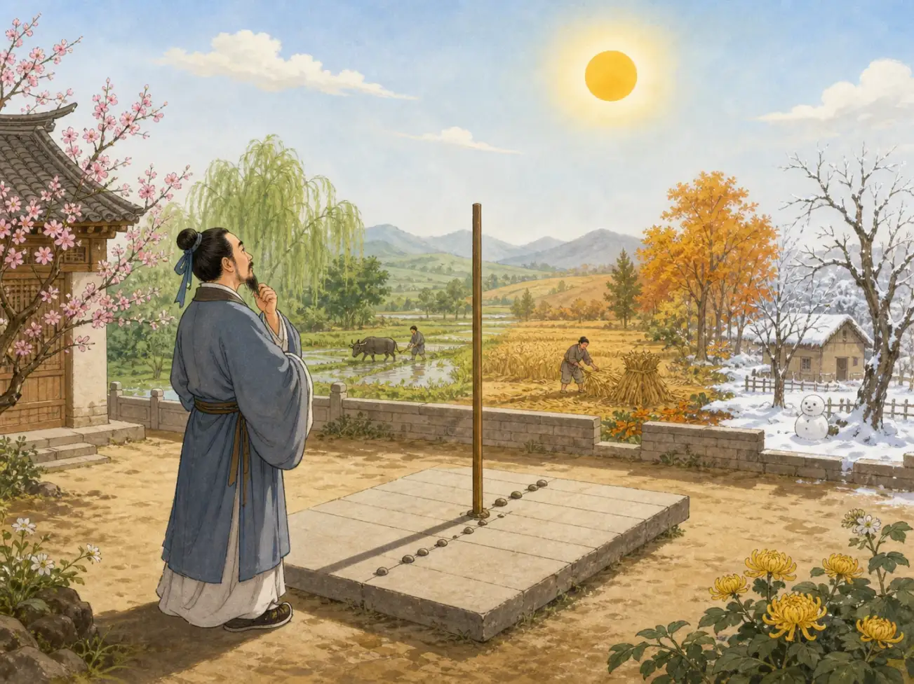
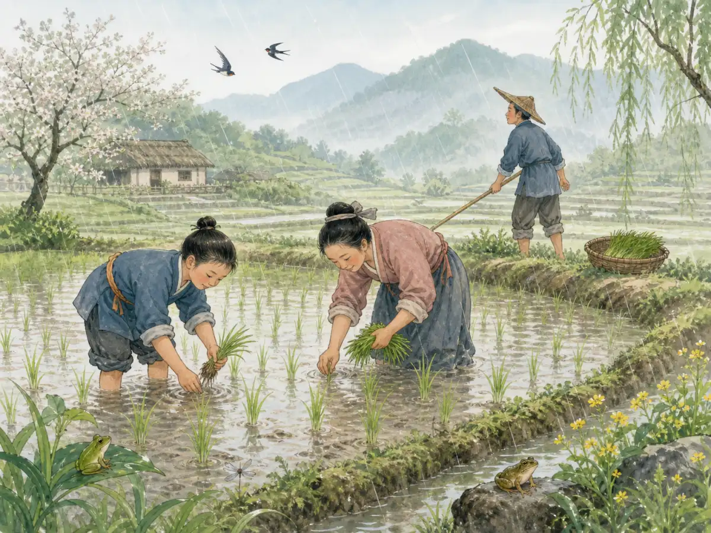

二十四节气：跟着太阳过一年
The 24 Solar Terms: Following the Sun Through the Year
Page 1
“春天”是不是太大了？
Is “Spring” Too Big a Word?

A sun shadow, fields, and changing trees show people observing the sun and the seasons of the year.
早春的一天走到外面，树枝可能还是光秃秃的，风吹过来还有点冷。两个星期以后再去看看，泥土变软了。再过一阵，小小的绿芽钻出来，虫子开始活动，花也慢慢开了。
这些日子，我们都叫它们“春天”。可是中国古人发现，一个春天里面，其实发生了很多很多变化。他们观察太阳、白天的长短、雨水、寒暖，也观察田野里的庄稼和草木。慢慢地，人们把一年分成了二十四个节气，大约每两个星期，就走到下一个节气。
春夏秋冬还是四季，只不过二十四节气看得更仔细。
Imagine stepping outside in early spring. The trees are still mostly bare, and the wind may still feel cold. Come back two weeks later and the ground is softer. Wait another two weeks and tiny green shoots are appearing. Soon insects are moving again, flowers are opening, and farmers are watching for rain.
We might call all of that spring. But people in ancient China noticed that a lot can happen inside one season. They watched the sun, the length of the days, the rain, the cold, the plants, and the fields. Over time, they divided the year into 24 solar terms, with a new one arriving about every two weeks.
Four seasons were not gone. The solar terms simply looked more closely.
Page 2
一个春天，有六个节气
Spring Has Six Names

Plants and crops grow in spring rain; weather, rainfall, and changes in the fields all appear in the names of solar terms.
春天从立春开始。它并不是说立春这一天，所有树木一下子就绿了，而是告诉人们，一年已经走到了春天开始的位置。
接下来是雨水，然后是惊蛰。天气渐渐转暖，安静了一个冬天的小动物也开始活跃起来。再往后是春分。这时候，白天和黑夜差不多一样长。接着还有Qīngmíng Jié · 春天祭扫祖先、也会踏青的传统节日。和谷雨。
我们嘴里的一个“春天”，古人却分出了六个不同的时刻。而且这些名字注意的事情还不一样。有的在看雨，有的在看小动物，有的在看太阳和白天的长短，还有的已经在想着田里的庄稼。
好像有人拿着一只放大镜，在仔细看一年怎么慢慢变化。
Spring begins with Lìchūn, the Beginning of Spring. It does not mean that every tree suddenly turns green that morning. It means that the year has reached another point in its journey around the sun, and spring is beginning.
Then comes Yǔshuǐ, Rain Water. After that is Jīngzhé, Awakening of Insects. As the weather warms, creatures that were quiet through the cold months begin to become active again. Next comes Chūnfēn, the Spring Equinox, when day and night are close to the same length. Then Qīngmíng Jié · 清明节 · A spring festival associated with visiting ancestors' graves and enjoying the outdoors. arrives, followed by Gǔyǔ, Grain Rain.
Six names, all inside what we simply call spring. The names do not all notice the same thing. One looks toward rain. Another notices living creatures. Another marks the changing sunlight. Another is connected with crops.
It is almost as if people were watching the year through a magnifying glass.
Page 3
还没有完全“满”
Not Full Yet
夏天也有六个节气，其中有一个名字特别有意思：小满。“小满”就是还没有完全满。在二十四节气最早形成的Huáng Hé · 流经中国北方、携带大量泥沙的大河。流域，这时候麦子等庄稼的籽粒正在一点点变得饱满，可还没有真正成熟。
已经不是空空的了，却也没有完全长好。只是“小小地满了”。
这样一个很短的时刻，古人也给它起了名字。这正是二十四节气有意思的地方。它不是只说“夏天到了”，而是继续往里面看：庄稼现在长到了哪一步？太阳又往前走了多少？天气和田野发生了什么小变化？
Summer has six solar terms too, and one of the loveliest names is Xiǎomǎn. It means Lesser Fullness. In the Huáng Hé · 黄河 · The great northern Chinese river known for carrying large amounts of silt. region where the solar terms first developed, grains such as wheat are filling at this time. The kernels are getting plumper, but they are not ripe yet.
Not empty anymore. Not completely full either. A little full.
Someone noticed that short moment in the life of a crop and thought it deserved a name. That tells us a lot about the solar terms. They are not simply four announcements saying, “Now it is spring,” “Now it is summer,” and so on. They pay attention to the small steps between one season and the next. About every two weeks, the sun has moved a little farther along its yearly path, and the world below may have changed a little too.
Page 4
露水也会一点点变冷
First Dew, Then Colder Dew
一年继续往前走，来到了秋天。有一个节气叫白露。早晨渐渐凉下来，草叶上容易看到亮晶晶的露水。再过几个星期，是寒露。只看名字就知道，露水出现的时候，天气已经更冷了。再往后，还有霜降。
白露、寒露、霜降——从露水，到更冷的露水，再到霜，秋天不是一下子变成冬天的，而是一点一点往前走。
当然，中国很大。北方和南方的天气并不一样，到了“霜降”这一天，也不是全国各地都会突然结霜。二十四节气最早来自黄河流域的人们对太阳和自然变化的观察，后来才慢慢传到中国各地。
Now follow the year into autumn. One solar term is called Báilù, White Dew. Mornings are becoming cooler, and drops of dew may appear on grass and leaves. A few weeks later comes Hánlù, Cold Dew. The name itself tells you that the year has moved farther toward cold weather. Then comes Shuāngjiàng, Frost’s Descent.
Dew. Colder dew. Frost. The change is gradual, and the names follow it step by step.
Of course, China is enormous. A morning in northern China does not feel the same as a morning far to the south, and frost does not suddenly appear everywhere on the day called Frost’s Descent. The solar terms first grew from observations around the Yellow River and were later used across many parts of China. The names are markers in the year, not weather buttons someone can press.
Page 5
一年是慢慢走过去的
Watching the Year Move
有些节气注意地面上的变化，还有几个节气特别容易让人看到太阳一年中的脚步。到了夏至，北半球迎来一年中白昼最长的时候；到了冬至，白昼最短。春分和秋分的时候，白天和黑夜又差不多一样长。
两千多年前，二十四节气已经形成了完整的系统。农民可以用它安排农事，后来这些名字也走进了节日、诗歌、谚语和每天的生活里。直到今天，人们还是会说立春、清明、夏至、白露和冬至。
也许，二十四节气最有意思的地方，就是它让人注意那些很容易错过的小变化。雨多了一点，白天长了一点；麦粒慢慢鼓起来，清晨出现了露水，凉意一天一天加深。
一年并不是“啪”一下从春天跳到夏天，再跳到秋天和冬天。只要仔细看，它每天都在悄悄变化。二十四节气，就是给其中一些变化起了名字。
Some solar terms follow things happening on the ground. Others make the sun’s journey especially easy to notice. At the Summer Solstice, the Northern Hemisphere has its longest daylight of the year. At the Winter Solstice, daylight is at its shortest. The Spring and Autumn Equinoxes sit between them, when day and night are nearly equal.
More than two thousand years ago, all 24 solar terms had been brought together into a system. Farmers used them to help plan work, but the terms also became part of festivals, sayings, poems, and everyday life. People still use their names today.
That may be the most interesting thing about the 24 solar terms. They ask us to notice changes that are easy to miss. A little more rain. A little longer daylight. Grain beginning to fill. Dew appearing on the grass. Cold arriving one small step at a time.
A year does not jump from spring to summer to autumn to winter. If you watch closely, it changes almost every day. The 24 solar terms gave some of those small changes names.